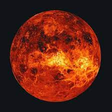

Back to home page
Venus

Venus is the second planet from the Sun and is the second largest terrestrial planet. Venus is sometimes referred to as the Earths sister planet due to their similar size and mass. Venus is named after the Roman goddess of love and beauty
Facts About Venus
- Venus does not have any moons or rings
- Venus is nearly as big as the Earth with a diameter of 12,104 km
- Venus is thought to be made up of a central iron core, rocky mantle and silicate crust
- A day on the surface of Venus (solar day) would appear to take 117 Earth days
- A year on Venus takes 225 Earth days
- The surface temperature on Venus can reach 471 °C